Two source-informed hollow castings. Profiles, stock and registration are provisional; bearing inserts, rotating internals, cylinders, hardware and complete engine mounting remain pending. Source photographs include components not yet modeled; views are not photographically registered.
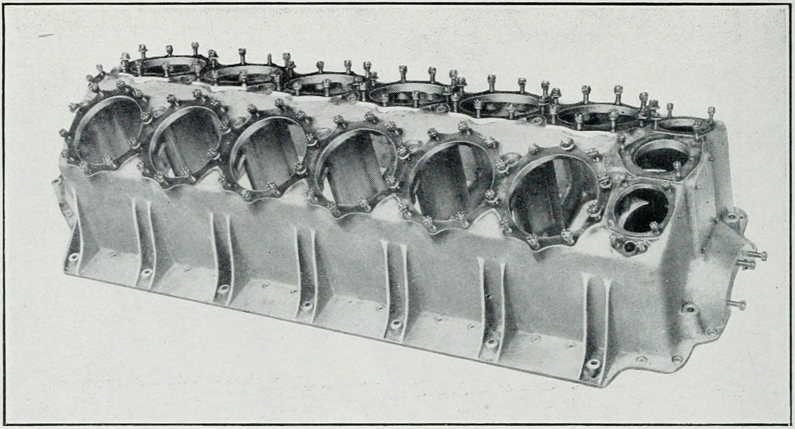
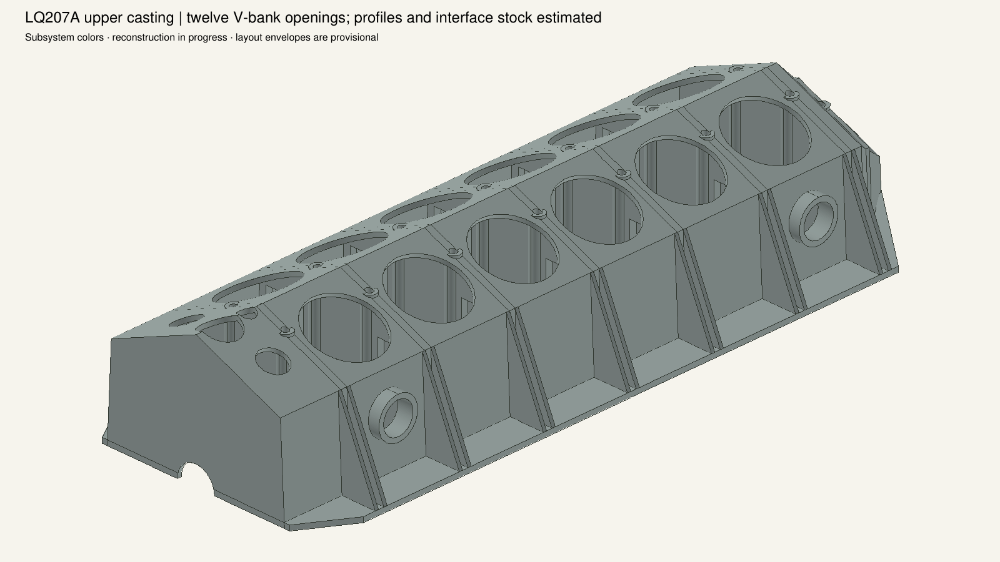
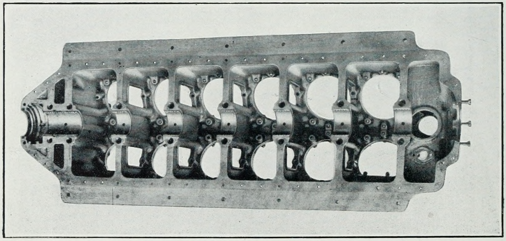
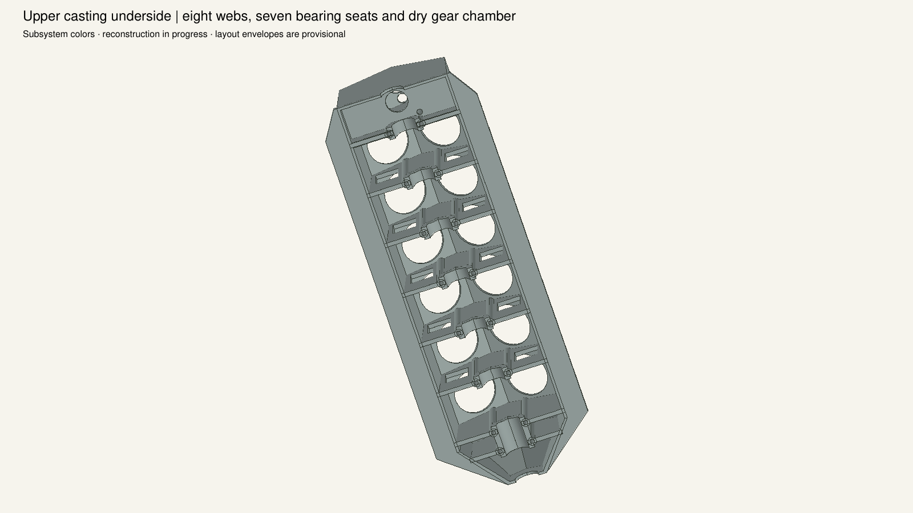
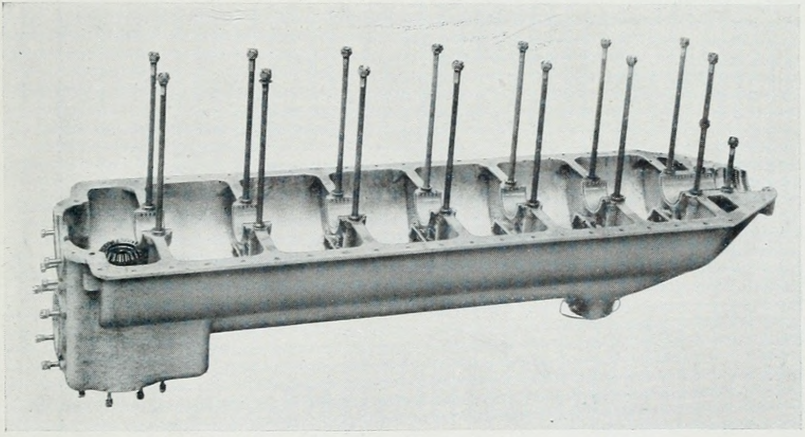
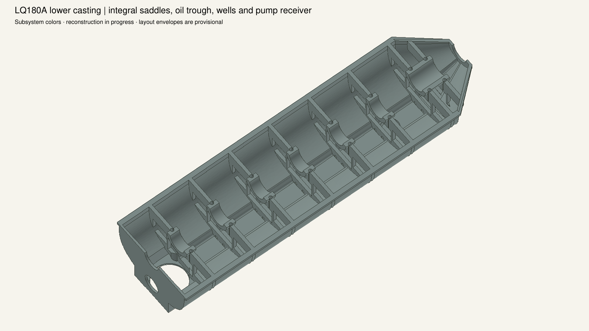
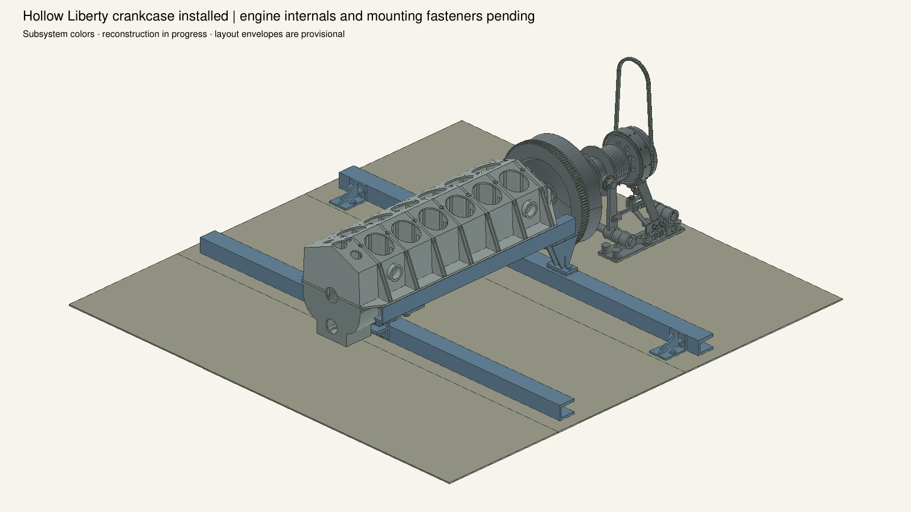
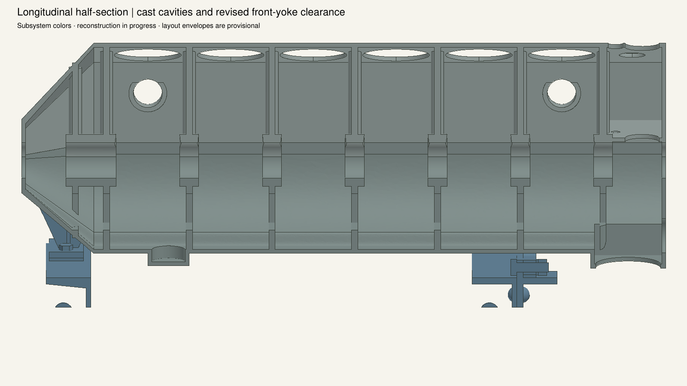
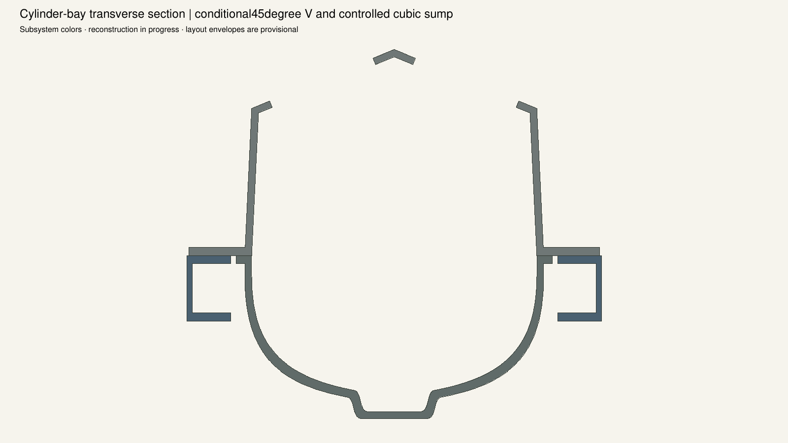
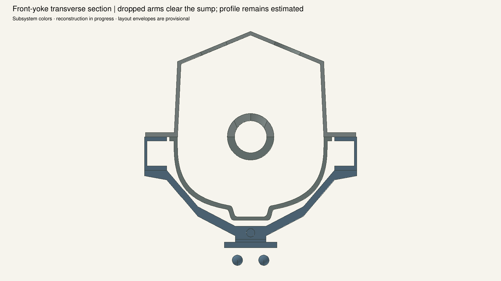
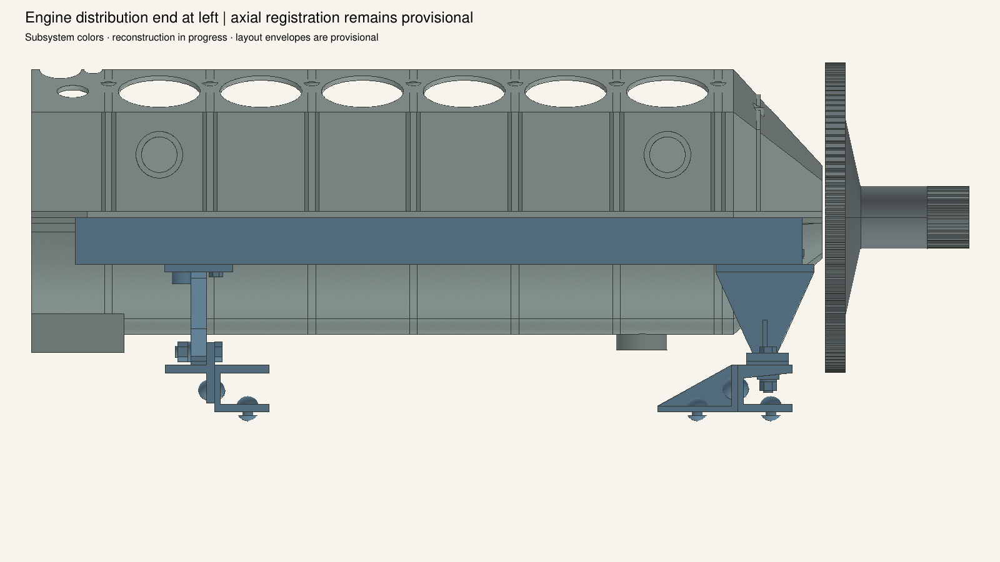
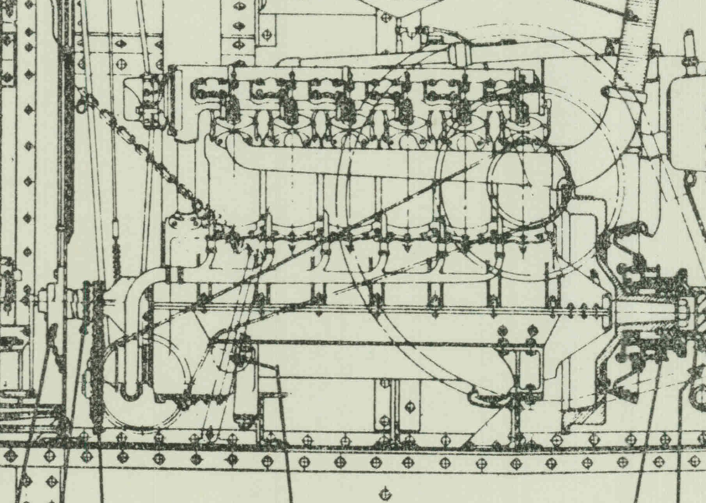
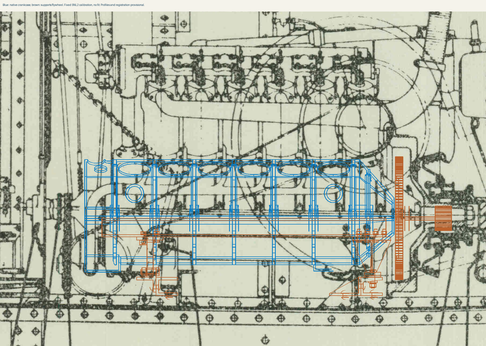